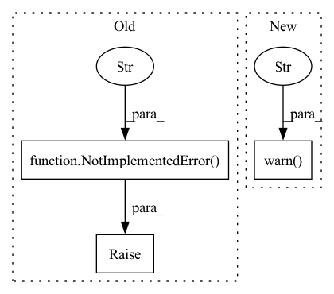

Pattern ID :686
Before Change
raise NotImplementedError("numpy backend doesn"t support AD")
def jit(self, f: Callable[..., Any]) -> Callable[..., Any]:
raise NotImplementedError("numpy backend doesn"t support jit compiling" )
def vmap(self, f: Callable[..., Any]) -> Any:
return self.np.vectorize(f)
After Change
raise NotImplementedError("numpy backend doesn"t support AD")
def jit(self, f: Callable[..., Any]) -> Callable[..., Any]:
warnings.warn("numpy backend has no parallel as jit, just do nothing" )
return f
// raise NotImplementedError("numpy backend doesn"t support jit compiling")
def vmap(self, f: Callable[..., Any]) -> Any:In pattern: SUPERPATTERN
Frequency: 3
Non-data size: 3
Instances Fragment ID: 3376499
Project Name: tencent-quantum-lab/tensorcircuit
Commit Name: eac05a18dd97895d4725a9a40f8a8d7867eed867
Time: 2020-04-19
Author: kcanamgal@foxmail.com
File Name: tensorcircuit/backends.py
M Class Name: NumpyBackend
N Class Name: NumpyBackend
M Method Name: jit(2)
N Method Name: jit(2)
M Parent Class: numpy_backend.NumPyBackend
N Parent Class: numpy_backend.NumPyBackend
M File Name: tensorcircuit/backends.py
N File Name: tensorcircuit/backends.py
M Start Line: 52
M End Line: 52
N Start Line: 53
N End Line: 54
Before Change
raise NotImplementedError(f"Please implement the `prepare_tasks` method.")
def prepare_new_models(self, *args, **kwargs):
raise NotImplementedError(f"Please implement the `prepare_new_models` method." )
def update_online_pred(self, *args, **kwargs):
raise NotImplementedError(f"Please implement the `update_online_pred` method.")
After Change
f"Finished prepare {len(new_models)} new models and set them to `{self.NEXT_ONLINE_TAG}`."
)
else:
self.logger.warn("No trainer to train new tasks." )
def update_online_pred(self, *args, **kwargs):
raise NotImplementedError(f"Please implement the `update_online_pred` method.")
Fragment ID: 3376501
Project Name: microsoft/qlib
Commit Name: 431a9c92c1654b132e00211361713b8edcbfd5eb
Time: 2021-04-02
Author: lzh222333@163.com
File Name: qlib/workflow/online/manager.py
M Class Name: OnlineManager
N Class Name: OnlineManager
M Method Name: prepare_new_models(2)
N Method Name: prepare_new_models(1)
M Parent Class: Serializable
N Parent Class: Serializable
M File Name: qlib/workflow/online/manager.py
N File Name: qlib/workflow/online/manager.py
M Start Line: 29
M End Line: 29
N Start Line: 34
N End Line: 50
Before Change
if n_i < K:
raise NotImplementedError(f"{c_i}, {n_i}, {K}")
if n_i % K != 0:
raise NotImplementedError(f"{c_i}, {n_i}, {K}" )
N = n_i // K
split = maketree(cluster, N=N)
is_reversed = c_i % 2 == 0
if is_reversed:After Change
if n_i < K:
raise NotImplementedError(f"insufficient number of items in cluster {c_i}, {n_i}, {K}")
if reminder > 0:
warnings.warn(f"cluster {c_i} is problematic {c_i}, {n_i}%{K}!=0, "
f"will put reminding {reminder} nodes in last partition" )
// raise NotImplementedError(f"{c_i}, {n_i}, {K}")
N = n_i // K
split = maketree(cluster, N=N)
Fragment ID: 3376500
Project Name: saareliad/ftpipe
Commit Name: a615651843b4733c5b6c9c54ae0b63bb52eb91d7
Time: 2020-09-06
Author: saareliad@campus.technion.ac.il
File Name: pytorch_Gpipe/model_partitioning/bin_packing/partition_2dbinpack.py
M Class Name: AnonimousClass
N Class Name: AnonimousClass
M Method Name: get_all_splits(3)
N Method Name: get_all_splits(3)
M Parent Class:
N Parent Class:
M File Name: pytorch_Gpipe/model_partitioning/bin_packing/partition_2dbinpack.py
N File Name: pytorch_Gpipe/model_partitioning/bin_packing/partition_2dbinpack.py
M Start Line: 67
M End Line: 72
N Start Line: 67
N End Line: 84